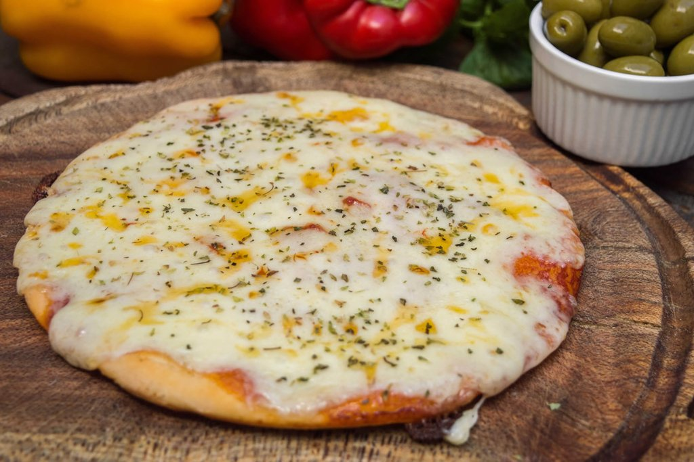

Pizza

Mozzarella Pizza
A pizza, a beloved culinary creation, boasts a thin, crispy crust adorned with a luscious layer of tomato sauce, melted mozzarella cheese, and a medley of savory toppings. With each bite, the harmonious blend of flavors and textures transports the palate to a realm of pure indulgence.
Ingredients
- Pizza dough
- Tomato sauce
- Mozzarella cheese
- Pepperoni
- Mushrooms
- Green bell pepper
- Onions
- Olive oil
- Salt
- Black pepper
- Oregano
Steps
- Mix the yeast in the water and crumble it.
- Place the flour on the counter or bowl forming a hollow.
- In the middle place the yeast and the oil. Place the salt outside the hollow, so that it does not touch the yeast. Integrate everything until forming a dough that we will let it leaven for about 30 minutes. We can choose to divide it into 6 buns or leave it all together and separate after leavening.
- Preheat the oven to medium temperature. While it is stretching, place the dough in each baking dish or oven base, depending on what you have
- Bake until crispy and add the ingredients of your choice.